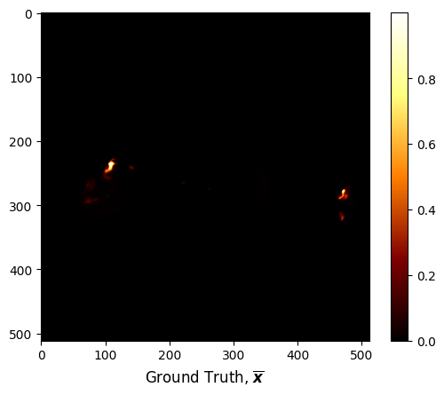
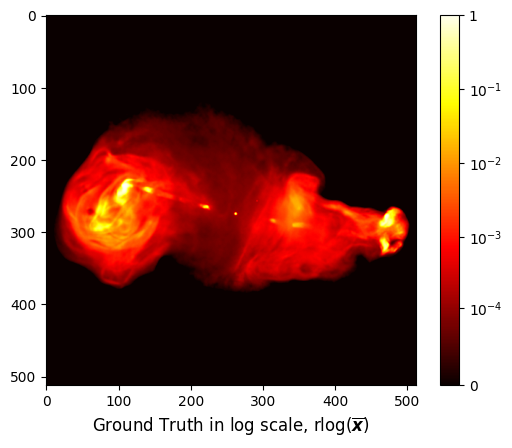
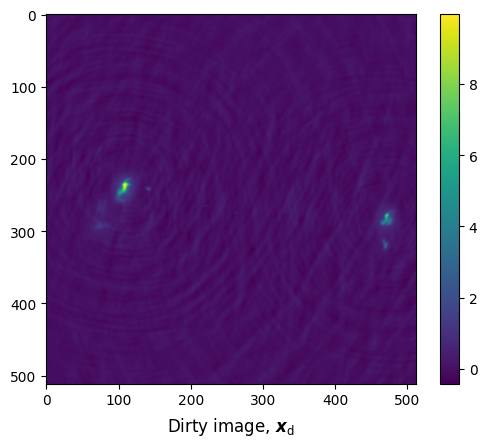
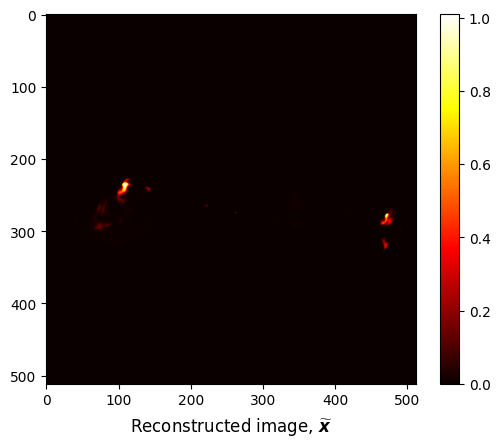
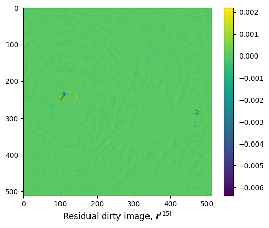

R2D2 Tutorial
Imaging with R2D2
The R2D2 algorithm takes a hybrid structure between a Plug-and-Play (PnP) algorithm and a learned
version of the well-know "Matching Pursuit" algorithm. Its reconstruction is formed as a series of
residual images, iteratively estimated as outputs of Deep Neural Networks (DNNs) taking the previous
iteration’s image estimate and associated data residual as inputs. R2D2's primary application is to
solve large-scale high-resolution high-dynamic range inverse problems in radio astronomy, more
specifically 2D planar monochromatic intensity imaging. Please refer to the following papers:
[1] Aghabiglou, A., Chu, C. S., Dabbech, A. & Wiaux, Y., The R2D2 deep neural network series paradigm
for fast precision imaging in radio astronomy, ApJS, 273(1):3, 2024,
arXiv:2403.05452 |
DOI:10.3847/1538-4365/ad46f5
[2] Dabbech, A., Aghabiglou, A., Chu, C. S. & Wiaux, Y., CLEANing Cygnus A deep and fast with R2D2,
ApJL, 2024 May 7;966(2):L34., ArXiv:2309.03291 |
DOI:10.3847/2041-8213/ad41df
Inverse Problem
The RI imaging inverse problem can be formulated as: \[ {\boldsymbol{y}} = {\boldsymbol{\Phi} {\boldsymbol{x}^{\star}} + \boldsymbol{n}} \] where \(\boldsymbol{y} \in \mathbb{C}^M\) is the measurement vector, also termed visibility, \(\boldsymbol{\bar{x}} \in \mathbb{R}^N\) is the unknown radio image, \(\boldsymbol{\Phi} \in \mathbb{C}^{N \times M}\) is the measurement operator corresponding to incomplete Fourier sampling, and \(\boldsymbol{n} \in \mathbb{C}^M\) is the noise noise with a standard deviation \(\tau > 0\). Visibitiy can be visualised in the image domain via back-projection, the resulting image, known as dirty image, is given by: \(\boldsymbol{x}_{\textrm{d}} = \kappa \textrm{Re}\{ \boldsymbol{\Phi}^\dagger \boldsymbol{y}\} = \kappa \textrm{Re}\{ \boldsymbol{\Phi}^\dagger \Phi \bar{x}+ \boldsymbol{\Phi}^\dagger \boldsymbol{n}\}\), where \(\textrm{Re}\{ \cdot \}\) represents real part of the arugment, \(\boldsymbol{\Phi}^\dagger\) is the adjoint measurement operator and \(\kappa\) is a normalisation factor ensuring the maximum value of the point-spread function (PSF) given by \(\kappa \textrm{Re} \{\boldsymbol{\Phi}^\dagger \boldsymbol{\Phi} \boldsymbol{\delta}\}\) is equal to 1, with \(\boldsymbol{\delta}\) denoting the image with value 1 at its center pixel and 0 otherwise.
R2D2's Iteration Structure
R2D2 consists of a series of \(I\) DNNs interleaved with \(I-1\) data fidelity steps. Each DNN \(\boldsymbol{N}_{\widehat{\boldsymbol{\theta}}^{(i)}}\), parametrized by \(\widehat{\boldsymbol{\theta}}\), takes the previous iteration's image estimate and associated residual dirty image as input. The residual dirty image is given by: \[\boldsymbol{r}^{(i-1)} = \kappa \textrm{Re} \{\boldsymbol{\Phi}^\dagger (\boldsymbol{y} - \boldsymbol{\Phi} \boldsymbol{x}^{(i-1)})\}\]. The image estimate and residual dirty image are initialized to \(\boldsymbol{x}^{(0)} = \boldsymbol{0}\) and \(\boldsymbol{r}^{(0)} = \boldsymbol{x}_{\textrm{d}}\), i.e. the dirty image, respectively. At each iteration \(i\), the image estimate is updated as: \[\boldsymbol{x}^{(i)} = \boldsymbol{x}^{(i-1)} + \boldsymbol{N}_{\widehat{\boldsymbol{\theta}}^{(i)}}(\boldsymbol{x}^{(i-1)}, \boldsymbol{r}^{(i-1)})\].
Clone Repository
In your perferred terminal application, create or change to the desired directory you would like the repository to be cloned to. Then run the following command.

git clone --recurse-submodules https://github.com/basp-group-private/R2D2-RI.git cd ./R2D2-RI
The --recurse-submodules flag would clone the necessary
RI-measurement-operator repository.
Dependencies
PyTorch and torchvision should be installed following instruction by PyTorch to ensure the latest version compatible with your CUDA version is installed. If your CUDA version is older than 11.8, then you can find the instruction here. For example, to install PyTorch with CUDA version 11.6, use the command below:
pip install torch==1.13.1+cu116 torchvision==0.14.1+cu116 --extra-index-url https://download.pytorch.org/whl/cu116
All other required Python packages are listed in the requirements.txt file. Python version 3.10 or higher is required.
Install the packages using the command below:
pip install -r requirements.txtPre-trained R2D2 checkpoints
The pre-trained checkpoints for R2D2 (15 iterations), R3D3 (3 UNet layers, 7 iterations) and R3D3 (6 UNet layers, 8 iterations) are available at the DOI: 10.17861/99cbe654-5071-4625-b59d-a26c790cbeb4. In this tutorial, we will work with R2D2.
Download the pretrained R2D2 models.
r2d2_ckpt_path=./ckpt/R2D2/ mkdir -p $r2d2_ckpt_path wget https://researchportal.hw.ac.uk/files/110702953/v1_R2D2_15UNets.zip -P $r2d2_ckpt_path # pre-trained model for R2D2 # Extract the files unzip $r2d2_ckpt_path/v1_R2D2_15UNets.zip -d $r2d2_ckpt_path # Remove the zip file rm $r2d2_ckpt_path/v1_R2D2_15UNets.zip
The checkpoints for R3D3 (3 UNet layers, 7 iterations) and R3D3 (6 UNet layers, 8 iterations) can be downloaded and extracted in the same manner.
Test dataset
In this tutorial, we provide a test dataset composed of a ground truth image in .fits format and associated measurement file in .mat format. The ground truth is an image of the radio galaxy 3c353. First let us visualise the ground truth image.
from astropy.io import fits import matplotlib.pyplot as plt gdth = fits.getdata('data/3c353/3c353_GTfits.fits') fig, ax = plt.subplots() pcm = ax.imshow(gdth, cmap='afmhot') cb = plt.colorbar(pcm, ax=ax) titl = ax.set_title(r'Ground Truth, $\overline{\boldsymbol{x}}$', y=-0.15)

Given the high dynamic range of the ground truth, only bright features are visible in linear scale. For a better visualisation, we map the pixel intensities in ground truth image \(\boldsymbol{x}\) to the logarithmic scale using the equation: \[\textrm{rlog}(\boldsymbol{x}) = \boldsymbol{x}_{\textrm{max}} \log_{a}(\frac{a}{\boldsymbol{x}_{\textrm{max}}} \boldsymbol{x} + \boldsymbol{1}),\] where \(a\) and \(\boldsymbol{x}_{\textrm{max}}\) correspond to the dynamic range and the maximum intensity of the ground truth image \(\boldsymbol{x}\). In this case, \(a = 10^5\) and \(\boldsymbol{x}_{\textrm{max}} = 1.0\).
import numpy as np import matplotlib.colors as colors class rlog(colors.Normalize): def __init__(self, a): self.a = a super().__init__(vmin=None, vmax=None, clip=False) def __call__(self, im): if len(im) == 0: return im im_max = np.max(im) if im_max < 1/self.a: return im else: return im_max * np.log10(self.a * im / im_max + 1) / np.log10(self.a) def inverse(self, im): return (self.a**(im) - 1) / self.a a = 1e5 norm = rlog(a) fig, ax = plt.subplots() pcm = ax.imshow(gdth, norm=norm, cmap='hot') cb = plt.colorbar(pcm, ax=ax) ticks = [np.log10(a * tick + 1)/np.log10(a) for tick in [0, 1e-4, 1e-3, 1e-2, 1e-1, 1]] ticks[-1] = 1 cb.set_ticks(ticks) cb.set_ticklabels([0, '$10^{-4}$', '$10^{-3}$', '$10^{-2}$', '$10^{-1}$', '1']) title = ax.set_title(r'Ground Truth in log scale, $\text{rlog}(\overline{\boldsymbol{x}})$', y=-0.15)

The test measurement file data/3c353/data_3c353.mat associated with the above ground truth can be loaded via the command below.
from scipy.io import loadmat meas = loadmat('data/3c353/data_3c353.mat') for k, v in meas.items(): if not k.startswith('_'): if max(v.shape) == 1: print(f"{k}: {v.item():.4e}") else: print(f"{k}: {v.shape}, {type(v)}")
u: (209840, 1)
v: (209840, 1)
maxProjBaseline: 1.2216e+05
w: (209840, 1)
y: (209840, 1)
nW: 3.4893e+01
nWimag: (209840, 1)
The expected variables are:
- "y", a measurement/ data vector.
- "u", a vector containing \(\boldsymbol{u}\) coordinates of the sampling position in units of the observation wavelength.
- "v", a vector containing \(\boldsymbol{v}\) coordinates of the sampling position in units of the observation wavelength.
- "w", a float number representing the so-called natural weights, consistent across the data
vector, corresponding to the inverse of the noise standard deviation \(\tau\). The vector constitues a
whitening operator to be applied to the data and injected in the measurement operator.
- "nWimag", a vector containing the imaging weights if available, compensating for the
non-uniform Fourier sampling and enhancing the effective resolution of the observations.
The vector is optional and can be computed directly in the R2D2 code.
- "frequency", the observation frequency (in Hz).
- "maxProjBaseline", the maximum projected baseline in units of the observation wavelength,
formally defined as \(\max\{\sqrt{\boldsymbol{u}^2 + \boldsymbol{v}^2}\}\).
The collection of the points \((\boldsymbol{u}, \boldsymbol{v})\) constitutes the Fourier sampling
pattern also known as the \(uv\)-coverage.
Image Reconstruction
The R2D2 imager can be run by calling the file src/imager.py while specifying the mandatory
configuration file yaml_file in .yaml file format.
Arguments
The imaging script expects a configuration file in .yaml file format, an example can be found
in config/imaging/r2d2.yaml. The required arguments are:
- data_file, the file in .mat format containing data y,
sampling pattern u and v and the natural weights nW.
- output_path, the directory at where resulting reconstruction and residual images
will be saved.
- super_resolution, the super resolution factor, default to 1.5.
- im_dim_x, image width, default to 512.
- im_dim_y, image height, default to 512.
- series, R2D2 or R3D3, default to R2D2.
- num_iter, the number of \(I\) DNNs in the series, default to 15.
- layers, the number of \(J\) network layers in the DNN architecture, default to 1.
- ckpt_path, the directory containing the DNN checkpoints.
- weight_type, types of imaging weights, choose from briggs, uniform and none, default to briggs.
Note that \(J\) is deteremined before training the DNNs and is consistent for all DNNs in the series,
while \(I\) is set during the training process in which the \((I+1)\)-th DNN shows no improvement in the S/R and logS/R metrics.
If weight_type is briggs, additional arguments are:
- weight_gridsize, default to 2.
- weight_robustness, default to 0.
There are also some optional arguments:
- gdth_file, the ground truth image file, used for computation of SNR metric.
- src_name, the name of the source, the output folder will be named as.
- save_all_outputs, to determine if all intermediate reconstruction and residual images should be saved, default to False.
- target_dynamic_range, dynamic range of the ground truth image, used for computation of logSNR metric along with gdth_file.
- meas_op_on_gpu, to determine if the measurement operator would be working on GPU, default to False.
Running R2D2
Here, we will use DNNs trained for the R2D2 series with a dataset comprising preprocessed optical
astronomical and biomedical images, which should now be downloaded in ckpt/v1_R2D2_15UNets
folder. The target image size is \(512 \times 512\), which is the same as the ground truth image.
The super resolution factor in this case is \(1.5\), which means that the Fourier sampling is done at
1.5 times the spatial bandwidth as the ground truth image. The corresponding image pixel size in unit
of arcsec is then given by:
\[\textrm{im_pixel_size} = \frac{180}{\pi} \times \frac{3600}{\textrm{super_resolution} \times 2
\times \textrm{max_proj_baseline}}\]
For the data weighting scheme, we consider the Briggs weighting with grid size 2 and robustness 0,
the same parameters in the training dataset.
The R2D2 imager can be run by calling the following command, using the test dataset and configuration
file provided in this tutorial:
python3 src/imager.py --yaml_file config/imaging/r2d2.yaml
R3D3, as well as R2D2Net and UNet, can be easily run by changing the ckpt_path, series and layers argument.
The dirty image of the test dataset can be computed using the equation above for the residual dirty image, in which \(\boldsymbol{x}^{(0)} = \boldsymbol{0}\).
dirty = fits.getdata('data/3c353/results/R2D2/3c353/dirty_normalised.fits') fig, ax = plt.subplots() pcm = ax.imshow(dirty, cmap='viridis') cb = plt.colorbar(pcm, ax=ax) title = ax.set_title(r'Dirty image, $\boldsymbol{x}_{\text{d}}$', y=-0.15)

Using the above dirty image as input to the R2D2 series yields reconstruction \(\widetilde{\boldsymbol{x}}\), as shown below.
The input to the first DNN is the dirty image shown above. For the test dataset, R2D2 reconstruction \(\tilde{\boldsymbol{x}}\),
after 15 iterations, has a signal-to-noise ratio (SNR) is 36.2 dB, and a logSNR, the SNR that compares
\(\textrm{rlog}(\widetilde{x})\) and \(\textrm{rlog}(\bar{x})\), is 28.6 dB.
rec = fits.getdata('data/3c353/results/R2D2/3c353/r2d2_final_model.fits') fig, ax = plt.subplots() pcm = ax.imshow(rec, cmap='hot') cb = plt.colorbar(pcm, ax=ax) title = ax.set_title(r'Reconstructed image, $\widetilde{\boldsymbol{x}}$', y=-0.15) a = 1e5 norm = rlog(a) fig, ax = plt.subplots() pcm = ax.imshow(rec, norm=norm, cmap='hot') cb = plt.colorbar(pcm, ax=ax) ticks = [np.log10(a * tick + 1)/np.log10(a) for tick in [0, 1e-4, 1e-3, 1e-2, 1e-1, 1]] ticks[-1] = 1 cb.set_ticks(ticks) cb.set_ticklabels([0, '$10^{-4}$', '$10^{-3}$', '$10^{-2}$', '$10^{-1}$', '1']) title = ax.set_title(r'Reconstructed image in log scale, $\text{rlog}(\widetilde{\boldsymbol{x}})$', y=-0.15)

The residual dirty image is shown below.
dirty = fits.getdata('data/3c353/results/R2D2/3c353/r2d2_final_residual.fits') fig, ax = plt.subplots() pcm = ax.imshow(dirty, cmap='viridis') cb = plt.colorbar(pcm, ax=ax) title = ax.set_title(r'Residual dirty image, $\boldsymbol{r}^{(15)}$', y=-0.15)

R2D2 tutorial in Jupyter notebook
You can download the R2D2 tutorial in Jupyter notebook format.